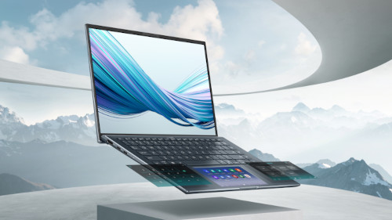
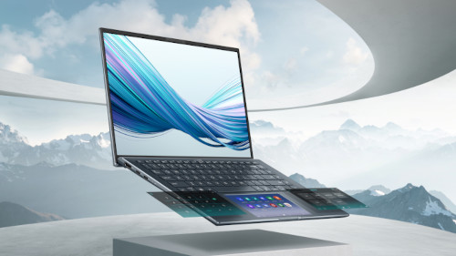

ASUS, officially known as ASUSTeK Computer Inc., is a Taiwanese multinational computer hardware and electronics company. Founded in 1989, ASUS has become one of the world's leading manufacturers of computer components and consumer electronics. ASUS produces a wide range of products, including motherboards, graphics cards, laptops, desktops, monitors, networking equipment, and various computer peripherals. The company has also ventured into the production of smartphones, tablets, and wearable devices. Renowned for its high-quality motherboards and graphics cards, ASUS has a significant presence in the gaming and enthusiast markets. The Republic of Gamers (ROG) series, in particular, is well-regarded among gaming enthusiasts for its cutting-edge features and performance. In the laptop and desktop market, ASUS offers a diverse lineup. The ZenBook series is known for its sleek and portable designs, catering to professionals and users on the go. The Republic of Gamers (ROG) series focuses on gaming laptops and desktops, featuring powerful hardware configurations. Under the Republic of Gamers (ROG) brand, ASUS manufactures gaming peripherals such as gaming mice, keyboards, headsets, and monitors. These products often feature high-end specifications and are designed to enhance the gaming experience. In addition to computer hardware, ASUS has also made a mark in the mobile industry. The company produces smartphones under the ZenFone series and tablets under the ZenPad series. These devices are known for offering competitive specifications and value for money. Throughout its history, ASUS has been recognized for innovation, receiving numerous patents and awards for its products. The company actively engages in corporate social responsibility initiatives, focusing on environmental sustainability, community engagement, and ethical business practices. With a strong global presence, ASUS continues to be a key player in the technology industry, catering to a diverse range of consumer needs.
 
